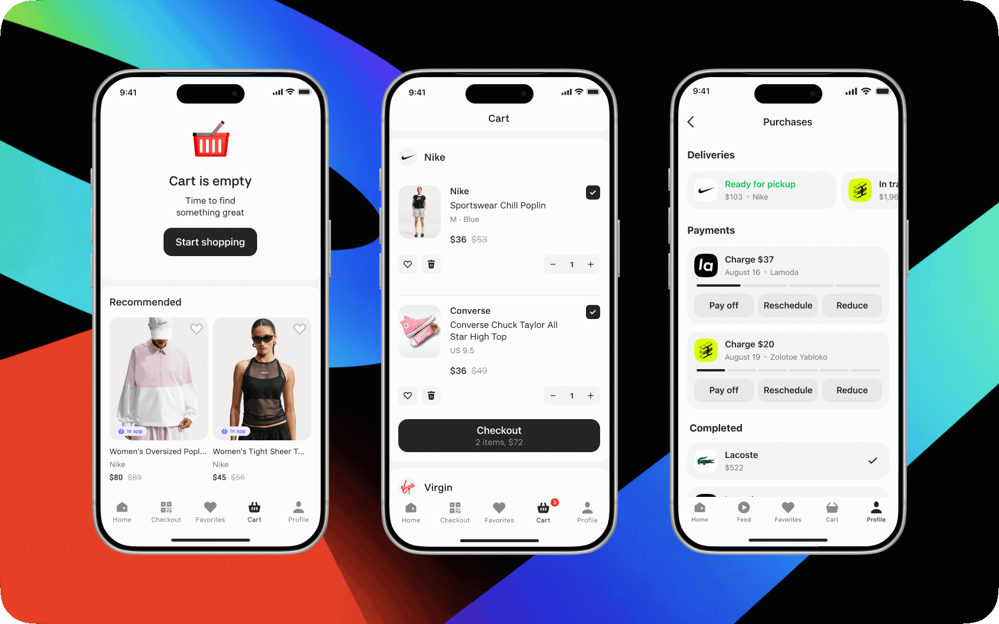
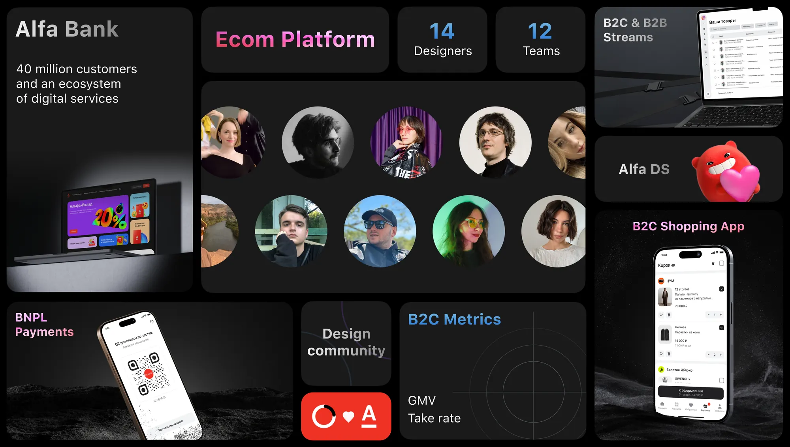
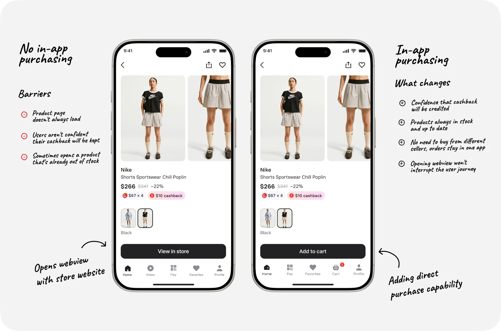
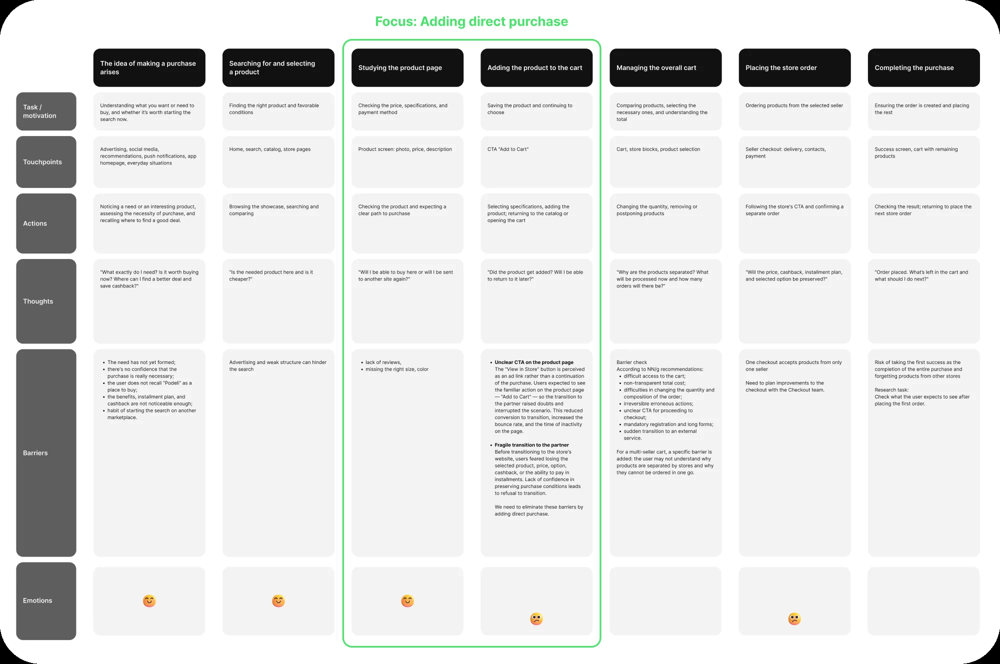
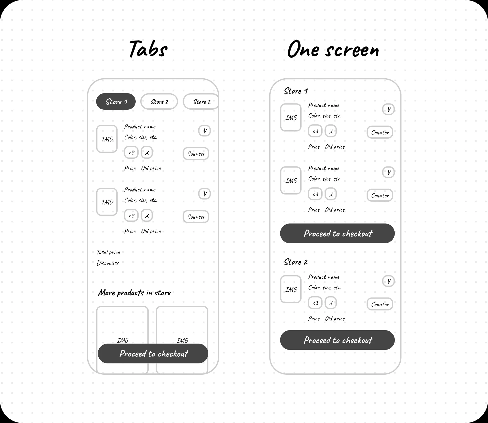
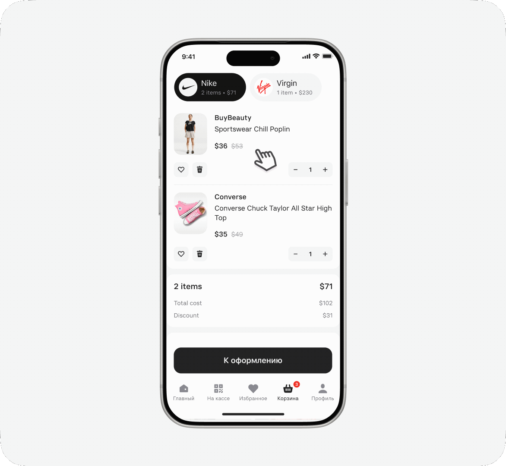
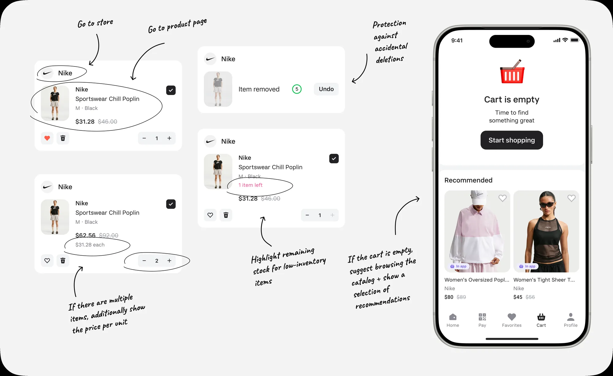
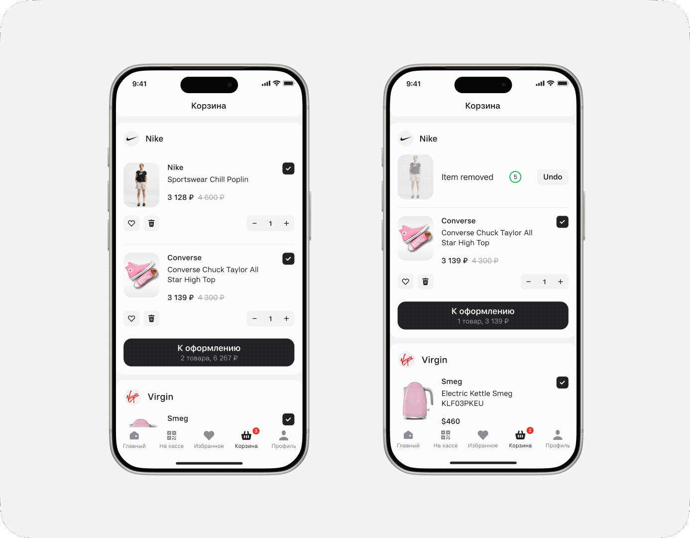
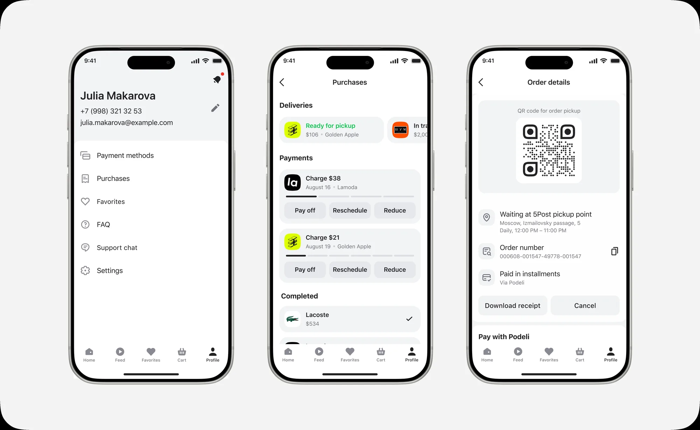

Designed the in-app purchase flow for the Podeli app from scratch — from adding items from different sellers to the cart through order checkout and management.
Using CJM, competitive analysis, and UX testing, I found a clear structure for the multi-seller cart, accounted for the technical constraint of separate checkouts, and prepared the MVP for launch across two channels — Podeli and the Alfa-Bank app.

The new flow let the product move from a clickout model to a full marketplace that earns commission on completed orders.
Started
June 2026
Launched
August 2026
My role
Product designer: discovery, JTBD, UX/UI solutions, prototyping, planning and running UX tests, dev support and design review
The Podeli app for iOS and Android, plus a WebView inside the Alfa-Bank app
Design system
Alfa-Bank's design system plus custom product presets
Success metrics
GMVGross Merchandise Value — total value of goods sold through the marketplace
MAUMonthly Active Users — number of active users per month
Conversioninto adding to cart, starting checkout, and completed purchase
Context
Alfa-Bank is Russia's largest private bank, building not just banking products but its own digital ecosystem — payments, installments, travel, and other services. Alfa-Bank's official website

Alfa-Bank's strategy included a goal of claiming a place in the e-commerce market to diversify revenue streams. Since the food segment within the Alfa Group ecosystem was already covered by X5 Group, the new marketplace focused on clothing, electronics, cosmetics, and home goods.
About the B2C and B2B tracks
The bank took a comprehensive approach. In 2025, a B2B track was created to build solutions for sellers:
managing major marketplaces — Wildberries, Ozon, Lamoda, and others — from a single dashboard;
building the seller's own online store.
For this ecosystem, an independent marketplace — Alfa-Market — was built to let sellers avoid the steep commissions charged by major marketplaces.
Business Challenge
The bank already had a product called Podeli, which worked on a clickout model: users found a product in the app but completed the purchase on the partner's website.
The business decided to turn Podeli into a full marketplace and change the monetization model — moving from being paid for referral clicks to earning commission on completed orders. The marketplace also needed to become available in a WebView inside the Alfa-Bank app.
The shared value proposition across both channels: buy in installments with no markup and earn cashback through Alfa-Bank's loyalty program.
Launching in-app purchases required designing checkout and order-management flows from scratch. I owned this workstream.
User specifics
The Podeli audience
Women aged 25–45 who shop on marketplaces regularly. Analytics revealed three segments:
Shopper — 55% — browse and buy products.
BNPL — 34% — manage installments and payments.
Mixed — 11% — do both.
The cart was built primarily for Shoppers, but it couldn't break the familiar BNPL flows.
The Alfa-Bank audience
Already familiar with how cashback works and expected transparent terms for earning it. In the WebView, we emphasized the discount and the ability to make a good deal right inside the banking app they already used.
Constraints
To shorten time to market, I designed the MVP and the target version in parallel. The main technical constraint early on: items from different sellers couldn't be checked out as a single order.
All shop online regularly, live in cities of different sizes, and don't work at Alfa-Bank.
High-priority problems found in the Podeli app
Unclear CTA on the product page The "View in store" button read as an ad link rather than a continuation of the purchase. Users expected a familiar action on the product page — "Buy" or "Add to cart" — so the handoff to the partner site felt uncertain and broke the flow. This lowered click-through and increased bounce rate.
Fragile handoff to the partner Before leaving for the store's website, users worried about losing the selected item, price, variant, cashback, or the installment option. Not being sure the purchase terms would carry over made people abandon the handoff.
The solution

JTBD: When I want to buy something on a marketplace, I want the best possible terms, so I can feel confident I made the right choice.
Growing orders, GMV, and commission revenue required an in-house cart.
This matched Alfa-Bank's marketplace goals. The main constraint was that items from different sellers couldn't be checked out as one order. I needed to design a multi-seller cart that clearly separates purchases by store and walks the user through multiple checkouts without hurting conversion.
CJM
Based on the research, NN/g recommendations, and technical constraints, I mapped the target purchase journey.

The CJM helped treat the cart not as a standalone screen but as the connecting step between choosing a product and checking out with different sellers. It organized the known and potential barriers that the design needed to address and that UX testing needed to validate.
Competitive analysis
To make the cart feel intuitive, I studied patterns users already know from other marketplaces: Ozon, Wildberries, Yandex Market, US Mall, ASOS, Lamoda, Samokat, Lenta, Zolotoe Yabloko, Avito, Flowwow, AliExpress, Yandex Eda, and Shopify's Shop.
I compared add-to-cart flows, cart structure, the transition to checkout, guest (unauthenticated) behavior, and edge cases — like hitting an item limit.
Basic capabilities were similar across services: changing quantity, removing items, and moving them to favorites. I specifically looked for examples where items couldn't be checked out as a single order.
Relevant patterns turned up in Yandex Eda and Shopify's Shop. Yandex Eda split orders using tabs, while Shop kept items on one screen, each checked out through its own primary button per seller.
Solution options
Because of the technical constraint, each seller's items had to be checked out as a separate order. At the sketch stage, I worked through two options for the multi-seller cart: one split items across store tabs, the other displayed them on a single page in separate blocks, each with its own checkout button.

Both approaches had their own advantages and risks that needed to be validated with users.
Option 1 — Tabs

Each seller's items live in their own tab. The user switches between stores and checks out the current order through a single primary button.
Extra sales from the product recommendations block
One clear checkout button
Navigation gets harder with many sellers.
No guarantee users notice the tabs
Option 2 — Single screen
Items are grouped into vertical blocks by seller. Each store has its own checkout button.
The whole cart is visible in one list
Separate CTAs explain the multi-order mechanic
Repeated buttons can add visual noise
No product recommendations from stores
Research to choose an option
We ran moderated UX testing of both multi-seller cart options. Participants were asked to build a cart and check out; on entering the cart, they saw the two concepts — seller tabs and a single-page layout — in a randomized order.
We observed how easily users found items they'd added, changed quantities, understood the seller split, and moved on to checkout.
Key result: 100% of comparison-test participants preferred the unified list split by seller. The tabs option hid part of the cart and caused people to lose items they'd added.
For the empty cart, I designed a way forward: the user can return to shopping or see personalized recommendations. This keeps the screen from becoming a dead end and helps them get back to browsing.

Removing items
I analyzed how competitors handle removing items and saving them to favorites. For quick actions, I added swipe — a familiar mobile gesture.
To let users undo an accidental removal, I considered three solutions:
An "Undo" button with a timer keeps the removed item's context visible and clearly shows how much time is left to cancel.
A snackbar with an "Undo" action doesn't block the interface, but the pattern itself often reads as a system message or error.
A confirmation modal prevents accidental removal but interrupts the flow and requires an extra action every time.
In the end I went with the "Undo" button with a countdown. It doesn't slow down intentional removal, stays visible in the item's context, and gives users a predictable way to fix a mistake.

Purchases and payments in one section
Previously, the "Purchases" section only showed installment orders. With the marketplace launch, I needed to add delivery information while keeping the familiar payment-tracking flow.
I considered splitting it into two separate items — "Orders" and "Payments" — but that complicated navigation and broke the familiar flow. So I merged deliveries and payments inside "Purchases".
I placed deliveries in a horizontal scroll above payments. Users immediately see the status of current orders without it crowding out upcoming payment info. Order details include a pickup QR code, pickup point address, order number, payment method, and any required actions.

4. Results after launch
Impact on business metrics
The purchase and order-management flows are built and live. Not enough time has passed since launch to gather a statistically significant amount of data.
Expected results:
A shorter path and dropping the webview should reduce drop-off after the main CTA.
Fewer drop-offs → higher conversion → more orders → GMV growth → combined with a growing take rate, revenue increases.
Metrics we're tracking:
increased conversion into add-to-cart, checkout start, and completed purchase.
MAU growth;
GMV and commission revenue growth;
We're continuing to gather data to assess the new flow's impact on user activity and business metrics.
Key Learnings & Reflection
What worked
Found the right cart structure. UX testing showed the unified list was clearer than tabs: users saw all items and understood the seller split better.
Accounted for real user behavior. Since the cart is often used to store items, I added partial selection — users can check out the items they want and keep the rest.
What's outside the MVP scope
A single checkout across sellers. Due to technical constraints, each order was checked out separately. Users understood the mechanic but experienced it as extra friction.
Part of the target flow. To shorten time to market, the first version shipped the core functionality, leaving the rest of the improvements in the backlog.
What I'll carry into future projects
Test information architecture against real content: a familiar pattern may not fit a different user context.
Sync with engineering on technical constraints earlier, and split the MVP from the target flow from the start.
Next steps
Merge checkout across different sellers into a single flow.
More actively communicate the loyalty program's benefits to Alfa-Bank customers in the marketplace.
Measure how changes affect conversion, repeat purchases, MAU, GMV, and product revenue.